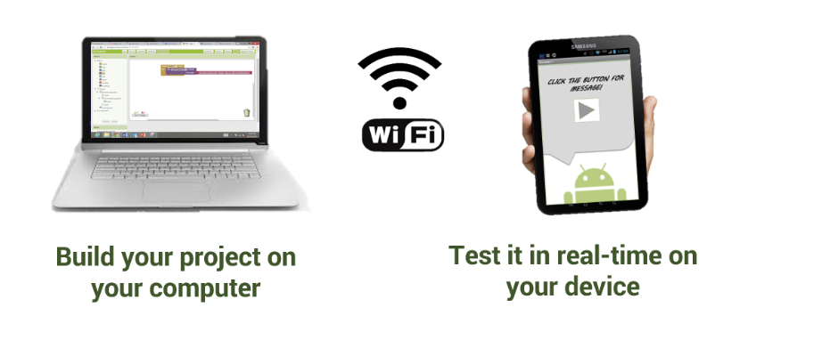
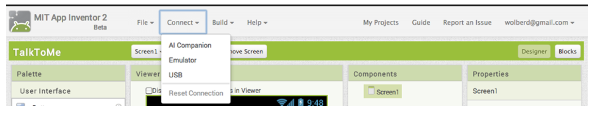
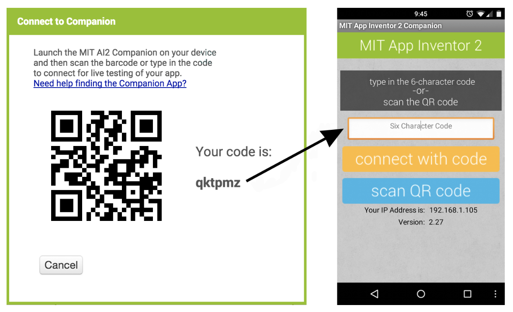

Instalaciones Previas
Para trabajar con esta herramienta de desarrollo de aplicaciones, debemos de poder hacer un testeo de la aplicación en directo (Live testing). Para ello hay tres formas distintas de hacerlo.
Si disponemos de un dispositivo Android y de una conexión wireless, podemos comenzar a crear aplicaciones sin descargarse ningún software en el ordenador. Para ello sí que tenemos que instalar la aplicación en nuestros teléfonos móviles.Ir a Google Play y descargar la aplicación App Inventor
- Después debemos comprobar que el ordenador y el smartphone están conectados a la misma red WiFi

- Seguidamente abriremos un proyecto de App Inventor y conectaremos con el smartphone. Para ello vamos a seguir las siguientes instrucciones:
- Ir a App Inventor y abrir un proyecto (o crear uno nuevo; Proyecto > Iniciar nuevo proyecto y asignar un nombre al proyecto).
- Luego, ir al menú "Conectar" y seleccionar en el desplegable “AI Companion", como se muestra en la imágen.

- Aparecerá un cuadro de diálogo con un código QR en la pantalla del ordenador. Entonces en nuestros smartphone, iniciamos la aplicación como con cualquier aplicación. Después pulsamos el botón "Escanear código QR" y escaneamos el código en la ventana de App Inventor.

¡Con esto ya habremos terminado de congurar el entorno!